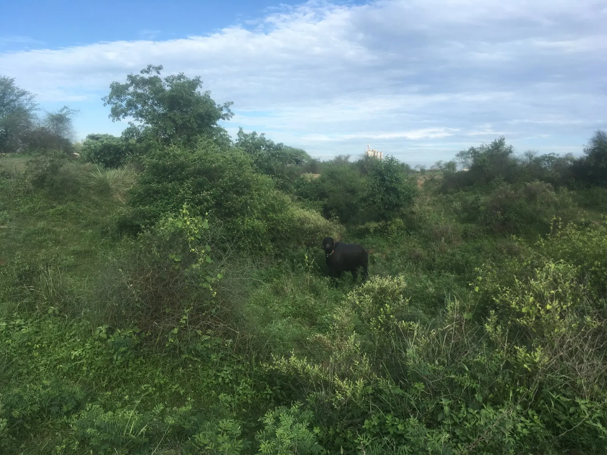
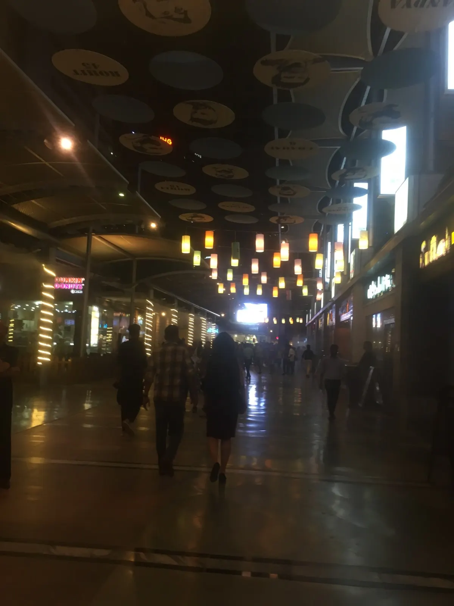
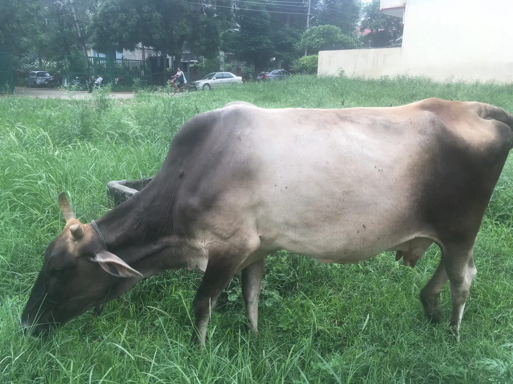
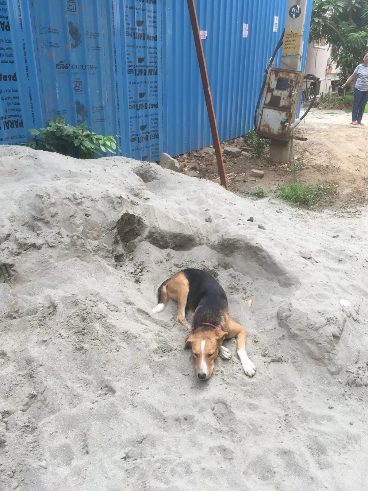
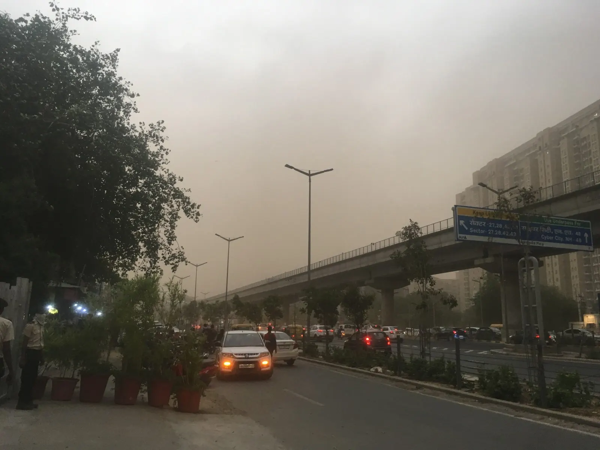

The first thing I noticed when I got home was how quiet it was. The streets were dark and silent — no cars honking, motorcycles beeping, rickshaws humming, or dogs barking, no one walking around outside. In the house there was no A/C or fans running, and in my room, it was so quiet that the sound of silence was pressing in, closing in on me from the inside – my head felt like it was about to explode. I had to turn on my classical music playlist on Spotify.
Before this summer, I knew little to nothing about India — I liked chicken tikka masala and garlic naan and mango lassi, and I’d heard of Modi and Bollywood, but that was about it. The ten weeks gave me a glimpse of the vast, lively, and amazing country that India is. It is quite diverse — there are 22 official languages (plus English), 29 states, and 7 union territories, and every state is like a different country. Spending a summer in India was quite the experience, and through this blog, I hope to share with you my observations, and the impressions I confirmed and dispelled on Indian culture — through the eyes of an American.
Ten weeks can be a long time. I was excited yet nervous to be spending my summer in India. When I told my family I was going there for an internship, their immediate response was, why would you want to go to India? Friends worried me about how hot and dirty and polluted it was going to be. Someone who had grown up in New Delhi told me it wasn’t a safe and welcoming place for young women like me. I fussed over which vaccinations to take and which medicines to bring – did I really need to bring malaria pills – I mean, what were the chances I would actually get bitten by a mosquito with malaria?? In the end I brought a 30-day supply and got the Hepatitis A and typhoid vaccines, two days before leaving.
My first observation about Indians was on the flight from Shanghai to New Delhi. I knew I was on the right flight because everyone around me was Indian, save for a couple Asian-looking guys. The passengers were causing quite a commotion and frustration for the flight attendants (this was China Eastern), negotiating to switch seats and asking for vegetarian meals when there were only meat options left. I’ve never seen so much fuss getting everyone to sit down. Going to India is quite the experience, as you can already tell, the person sitting next to me said with a laugh.
I walked out of the Delhi airport into a hot and toasty summer night. My first impression was that people here aren’t super friendly. The customs guy glanced at my passport and handed it back to me with a cold stare. I couldn’t find the cab driver who was supposed to pick me up, and when I asked to borrow someone’s phone, they bluntly said no and pointed to the pay phone kiosk. At first the guy there tried to overcharge me, but I refused to pay a cent, so I got him to just call for me with his personal phone. The cab driver immediately gave me the impression he wasn’t going to be very talkative, answering my questions/remarks with a mere nod. The only words he said were when we arrived at the guesthouse in Gurgaon, where I would stay for the next ten weeks. I offered the driver a quarter and asked if he took U.S. money. He smiled and said, “Give me.” I soon realized it is not custom for cab/Uber drivers to converse with you. In fact, I only met one Uber driver the entire summer who wanted to talk (he spoke decent English).
My first glimpse of Gurgaon was through a 35-min walk to the mall in 115º heat, at 3 in the afternoon. As expected, it was really hot, the air was dusty (though I remember the sky was blue), and there was a lot of honking as rickshaws driving as fast as (or faster than) the cars sped across lanes and weaved in and out of the cars. We found life in the large mall, which was full of families looking to escape the heat. It was here that I had the first (of many) mango lassis.
Gurgaon (officially Gurugram) is a leading financial and industrial hub about 40 minutes outside of Delhi. It has the third-highest per capita income in India and local offices for over 250 Fortune 500 companies. It was also recently named the most polluted city in the world. While it wouldn’t be on a list of touristy places to see in India, it has a young, lively, modern vibe. A few evenings we would go out, either to a jazz club or movie, or just to eat out when we were tired of the guesthouse food. The first Friday night, we went to the nearby mall. We had dinner at a bar/restaurant (the drinking age is 25, but no one checks), which served a strange fusion of Indian, Chinese, and American and played middle school songs on the radio and had a cricket game going on the TV. That night, hanging out with newly made friends, in an outdoor mall filled with young energy, I felt like I was in one of those promotional videos of interns laughing and talking together !

Our guesthouse was in a residential neighborhood, where the houses were painted white and light pink and other colors. Some had neat rows of planted pots outside, others had bricks or other construction materials. I felt out of place in my workout clothes on my way to the gym—I saw women wearing long dresses and loose pants, with shawls. Two people were washing their cars with rags, one woman was washing clothes in a tub. I walked by a dental business and salon. I thought the air smelled sweet, which I admit is a strange way to describe dust and pollution. People were biking to work, amidst honking rickshaws and cars. Such is the way of life in Gurgaon.


The first day of the internship, I learned about the “Indian nod”: the continuous head wobble that looks like both yes and no but usually indicates agreement. By the end of the summer I found myself inclined to start doing it too.
At first, I was a little uncomfortable about servers and maids always being around in the office, whether collecting our coffee cups or cleaning the washrooms – why should they have to be denied better opportunities for our comfort and convenience? We can get our own coffee! Actually, we did get our own coffee – they just did everything else, like make the bathroom mirrors and eating dishes spotless, and wash and refill our glass water bottles each day. At the same time, with so many people in the workforce, one could argue that this type of work allows them to lead decent livelihoods. Either way, it seems millennials are hiring fewer domestic helpers.
Our meals were cooked, our rooms were cleaned, we were driven to and from work – you must’ve lived like kings! people remarked back home. Yes it was nice and it was convenient, but it also meant we didn’t have a lot of options over what we could eat or how we could do our laundry or when we went to the office.
Work at the company was slow at times, fun at others. I liked the informal vibe of the company: no one ate at their desks, everyone went down to the canteen for lunch. There’s more mingling and informal conversation; in fact, my team didn’t have any formal meetings. This also meant though that there’s no Google calendar—if my mentor said to meet at 11am, it would be a good day if we met before the end of the day. The work culture is the opposite of get there early, get your work done, and go home. People tended to come in late and stay late. Don’t get me wrong—they work hard and long hours. But in the open-office environment, people chatted about both work and non-work related matters. I looked forward to the daily after-lunch walks, where I chatted with the other women on my team about everything from food and travel places to good-looking celebrities and weddings (I didn’t know that the one color you do not wear to a wedding is white – you would wear white to a funeral! And lots of people are invited — 3000-5000 invitations are typically sent, with spices too).
When it was someone’s birthday, another member of the team would buy a cake and samosas and we would go down to the canteen and sing happy birthday. Another time, someone who got engaged brought a box of barfi—rectangular condensed milk based sweets coated with an edible metallic leaf (which I was delighted to partake of) — and people joked with him about marriage all day.
English was the official language spoken, but there was still a language barrier as people preferred to speak Hindi to one another. It took a while for the invisible barrier between me and the team to soften.
Cricket is like a religion here (for most people). When India was losing to New Zealand in the Cricket World Cup semifinals, that’s all people were talking about — I doubt any work got done that afternoon. They had made bets with each other too – one guy had even hedged his bet by betting for both sides. When I left the office at 6:30, the canteen was full of people watching on the large screen. After cricket, tennis is the second most watched sport in India – Wimbledon is especially popular. Two exciting matches happened in one July weekend: The Cricket World Cup – England defeated New Zealand after a double tie – and Wimbledon, where Djokovic beat Federer 13-12 in the fifth set tiebreak.
Speaking of English sports, a few things here reminded me of England—the metro, the driving on the left side of the road, and the British English. One time at the guesthouse I asked for tomato soup, but the person who runs the place didn’t understand me. Then he finally realized what I was asking for: “You mean tuh-MAH-to soup!” We had a good laugh at our different pronunciations.
The routine became eat, work, eat, read, sleep during the weekdays, and travel on the weekends (see my other posts for my weekend travel adventures!). I spent all summer trying to figure out how to add “move” into that routine. I ended up going on the treadmill before work, occasionally running outside when the air quality index was better, and doing all the free-trial workout and yoga classes I could find (though I didn’t end up doing nearly as much yoga as I thought I would). The evenings after work always went by so quickly – I filled them up by reading the news, reading books, and watching movies. I read Midnight’s Children by Salman Rushdie, Sea of Poppies by Amitav Ghosh, Life of Pi by Yann Martel, and My Experiments with Truth by Mahatma Gandhi (you can see the Indian theme here). I also watched The Darjeeling Limited (directed by Wes Anderson, who also directed The Grand Budapest Hotel) and Delhi Crime on Netflix (like I needed to be convinced further that Delhi wasn’t the safest city in the world).
I wouldn’t say I experienced culture shock, as I often traveled with the other interns and everything different I found interesting, rather than disillusioning. The only time I really felt homesick was after coming back from Hong Kong, when I realized how much I missed Asian food (there’s a lot of Chinese food here, but it’s still Indo-Chinese food). There were definitely things that frustrated me about Indian culture, like unnecessary traffic jams or drivers texting while driving. Uber drivers usually didn’t speak English, so sometimes we would be yelling at each other over the phone, having two separate conversations – but still yelling nevertheless. It bothered me that people would bump into you, shove past you (in areas that were crowded but not that crowded), and not acknowledge doing so. And when it comes to waiting in line, they go by a set of rules I was not familiar with. At the airport, people cut in front of me at the luggage drop-off, at the security checkpoint, and in the bathroom.
People “cut” while driving too. India is notorious for its driving, and I confirmed that on day one. The company arranged a cab ride for us to and from work each day, a 10-minute ride jammed with rickshaws, motorcycles, cars, and pedestrians. There was a certain intersection crammed with cars, where it was a game of inching forward bit by bit until you find a chance to get in front of the rickshaws and cars crossing the other direction in front of you. And when sitting in a rickshaw, I felt like I was on an Indiana Jones ride – except knowing that I was just one bump or collision away from being flung out onto the street.
Lane markings are often disregarded—cars drift into other lanes on a regular basis and sometimes just hang out halfway in two adjacent lanes. Honking seems to be used mainly to signal to the driver/motorcycle in front so they know to scoot over and make room for you to pass them – thus explaining why it’s always so loud. Once I asked an Uber driver why people don’t often use their turn signals when changing lanes. It’s mutual understanding, he answered. People change lanes, expecting that you’ll see it and understand. They expect that you’re already on board with them. If a car missed an exit, the driver would just back up and take the desired route. Most cars also didn’t have seatbelts in the back seats, and it didn’t make sense to me that men on motorcycles would be required to wear a helmet but not the women or children sitting behind them. But after a little while I too felt accustomed to these new “rules.”
I was initially surprised that most of the street peddlers who asked where I was from (the one and only question they ask you) thought I was Japanese. Many wouldn’t believe me when I said I was from the U.S.—they would reply, but you look Japanese! Then I realized that more Japanese people, both expats and tourists, probably visit India. The Uber driver I mentioned earlier had guessed my ethnicity correctly, but then proceeded to show me pictures of other Asian tourists (quite a few Uber drivers also work as tour guides) and wanted me to guess where they were from. I found this odd but wasn’t really offended, I just figured he was very curious. I was also told that if I was just a little bit tanner, I could pass off as northeast Indian. If only I spoke a little Hindi (and portrayed a ton of confidence), I could get the much cheaper Indian tickets for sightseeing instead of having to pay the jacked up foreigner prices.
Of the very few Hindi terms I learned, most of them concerned food. Other than that, one of the first Hindi phrases I learned was theek hai (teek-ay), because I heard it all the time in the office – okay. People also say achha (aa-cha) a lot, which means good, like when you say you’re doing good, or when you’re saying something is fine. Haan (though sounds more like “ha” to me) is yes, nay is no. I heard thank you – dhanyawaad (dañ-ey-vad) —on the plane. Another phrase is kitne ka dogé (kit-ney ka doe-gey) – how much? And then you can say mahanga — expensive!
Condensing my summer into one list…I could not have imagined that this summer I would:
- Go whitewater rafting on the Ganges river
- Take a private canoe tour in backwater canals on the southwestern coast of India
- Be used as a springboard by a monkey
- Go 10 weeks without eating beef but come face to face with several cows
- Attend a service at the oldest church in India (built in 1503) where Vasco da Gama was buried
- Visit the US Embassy to meet people who work at USAID
- Visit a wind farm in south India
- Attend my first conference
- Call 90ºF weather “nice and cool” and get excited when the air quality index went below 100 (it’s even worse in the winter — it can get up to 600-800!)
- See a classical Indian dance performance
- Witness a sandstorm for the first time

- Ride in multiple rickshaws, including in one for an hour to the India-Pakistan border (and manage to fall asleep despite all the honking around us), where we watched Indian and Pakistani guards face off
- Observe a river god evening ceremony (the Ganga Aarti)
- Do 6am workout classes
- Ride a camel
- Become a Gandhi fan
- Visit the Presidential Palace, the official home of the President of India and the largest residence of a head of state in the world
Back home in California, I am enjoying the nice weather where the heat doesn’t stick to my skin and the sun is so strong and people drive how they’re supposed to drive and I can drink tap water again! I’m not going to lie and say that spending 10 weeks in India was life-changing, that I am now a completely different person. I’m still the same person (maybe with a little more cultural knowledge) and I still don’t know what I want to do in life, but I know I’ll apply this experience to whatever I end up doing. I do think that living in a different country is a must-have, eye-opening experience for everyone. It makes you realize that in a different world (which is now only an airplane ride away), people do things differently, and it’s not necessarily worse than the way you do it.
India no doubt faces a lot of challenges, like stray animals and pollution, but its unique history and culture, not to mention manpower, also bring so much opportunity. One reason I came to India was to learn about the renewable energy market there. Most of the country’s energy comes from coal—natural gas isn’t produced domestically—so there are more intermittency issues than in the U.S. Power outages were a regular occurrence in Gurgaon (though fortunately each one didn’t last long). Renewable energy won’t replace coal anytime soon, but there is huge market potential for renewables in India. I learned about the importance of government policy and strategic planning. India is ranked 4th globally in cumulative installed capacity for wind; Prime Minister Modi has committed to 175GW of renewable power by 2022 and a 40% share of renewable capacity in the total power generation mix by 2030.
There are things I think we can learn from India too. 1) We could use a lot less meat, and less processed food too. We can make veg dishes that taste better than non-veg food that kids would enjoy eating — a couple of my favorite dishes were bhindi masala (okra) and dal makhni (lentils). 2) We could have more respect for our elders and prioritize family more. When we visited some high schoolers in Gurgaon, I was impressed by how polite and well-behaved the students were – they would say “Yes, sir” and “Yes, ma’am” in unison. Family is highly respected and valued, often above career. One guy on my team gave up an international position that paid 4x the amount he was making in India because his family wanted him to stay close to home, and in turn he wanted to keep close ties with his family. I don’t need the money, and I’m happy here, he told me. 3) We could live more frugally — not necessarily by haggling with street peddlers, but we can learn from how people look for the best deals and make the most of what they have, and learn to make things work (I was amazed how entire families managed to squeeze into one rickshaw!).
I got a sense of the great pride for their country that people have here. India is referred to as the “motherland,” as “Mother India,” which reflects how much people respect and care for her. After centuries of Islamic invasions, and after being colonized, India is the world’s largest democracy today and has a voice of its own, with its own culture, which is pretty incredible.
My summer experience was amazing in that I got to immerse myself in the work culture of a successful company in India while learning about the renewable energy market in another country – it was the perfect combination of learning and cultural immersion. I visited 7 different cities in India, and while a weekend wasn’t enough to fully explore some of them, it was at least a good sampling of the country. If I ever have the opportunity to come back, I would have to visit Mumbai, Darjeeling (tea plantations!), Goa, and the Himalayas. Until next time!